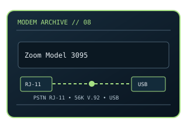

[ MODEL-SPECIFIC NETWORK HARDWARE ]
Zoom 3095 V.92 USB Dial-Up Modem
USB-attached V.92 dial-up modem for a single analog subscriber line. This static record documents the modem-side line technology separately from its host interface and provider-dependent service rate.

MODEL IDENTIFICATION: Match the exact model number and hardware revision on the device label. Similar names, regional SKUs and provider-branded variants may have different ports, firmware, modulation or driver support.
Exact specifications and compatibility
| Cataloged model | Zoom 3095 V.92 USB Dial-Up Modem |
|---|---|
| Dedicated subcategory | Modems and line-termination devices |
| Modulation / line protocol | ITU-T V.92/V.90 dial-up modem; RJ-11 telephone-line input; V.92 and V.90 PCM downstream with V.34-family analog upstream and fallback modulation. |
| Line / physical interfaces | RJ-11 telephone-line input; V.92 and V.90 PCM downstream with V.34-family analog upstream and fallback modulation. |
| Nominal data rate | Nominal 56 kb/s maximum receive; up to 48 kb/s V.92 transmit where the access server and PSTN path support it, otherwise V.90 upstream is typically capped at 33.6 kb/s. |
| Bus / host interface | USB host connection (USB 2.0-compatible host); RJ-11 analog line interface. |
| Operating-system compatibility | Host operation depends on Zoom driver availability for the exact 3095 revision. Supported OS combinations were contemporary Windows/macOS releases; do not assume current Windows, macOS or Linux has an in-box driver. Dial-up networking software is also required. |
| Driver / firmware notes | This is a telephone-line modem, not a cellular radio or broadband adapter. Modem-on-hold and V.92 gains require compatible ISP equipment and an uninterrupted analog line. |
| Wi-Fi / switching | No Wi-Fi access point or Ethernet switching function is cataloged for this modem. |
Model-specific notes
This is a telephone-line modem, not a cellular radio or broadband adapter. Modem-on-hold and V.92 gains require compatible ISP equipment and an uninterrupted analog line. Nominal signaling rates are standards/model ceilings rather than specimen test results or a promise of ISP throughput.
Manufacturer, archive and standards references
- Internet Archive catalog copy of Zoom Model 3095 driver mediaArchived model-specific guide or software documentation for identification and legacy host details.
- ITU-T Recommendation V.90 — companion reference for legacy Zoom modem negotiationManufacturer source; confirm regional SKU, revision and present support status.
- ITU-T Recommendation V.92 — 56K modem signalingStandards reference for the relevant line/modem signaling family; implementation and ISP profile remain model-specific.
Check manufacturer and provider support for the exact region, revision, line profile, firmware and host OS before deployment.